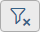

After an analysis run, you can view a list of all triggered rules, their description, resolution steps, and a control tree with highlighted problematic elements.
Below you can see an example of how the results are displayed.
The left side shows a list of the triggered rules sorted by severity (High, Medium, Low). You can use the dropdown menus to filter on Severity, Category, or Audience. You can clear your filtering by choosing Clear Filtering .
Selecting Report generates an HTML report with the current set of rules and scope. You can view it in a new tab or download it as a .ZIP file.
Description - general description of the rule
Resolution - steps to resolve the issue
URLs - useful links (for example, API Reference or Documentation)
Severity - the severity of the identified issue
Element ClassName and ID - the namespace of the element
The right side shows the element tree of the application. The root of the tree is called <WEBPAGE>. All rules that are not specific for a given control are mapped to this element. If these rules are triggered, the resulting issues will be mapped to the <WEBPAGE> element.
Hovering on an element in the tree highlights it in the application (if it is visible).
Selecting an element with issues in the element tree loads those issues in the issues list.
The table in the issues list shows all other elements that have triggered the same rule. The list also shows you the severity of each issue.